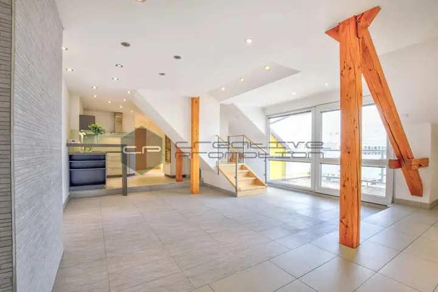
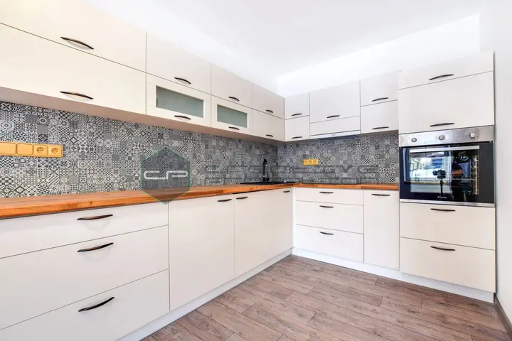
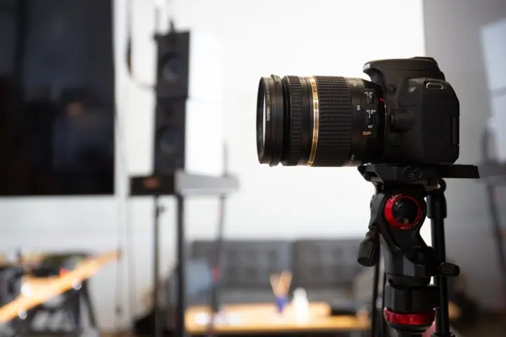
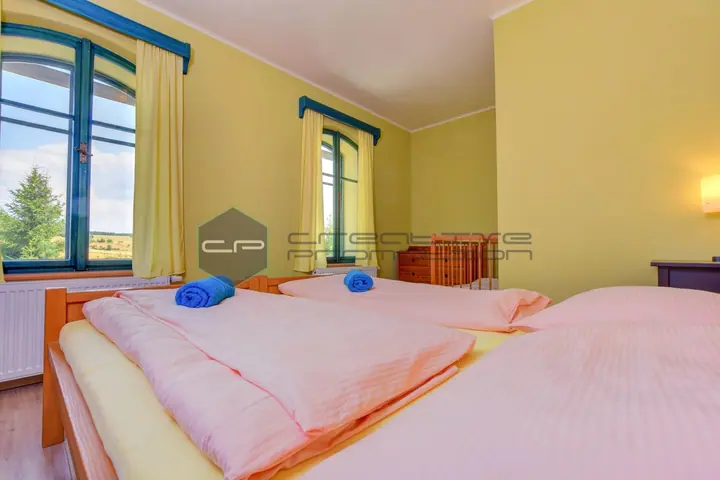
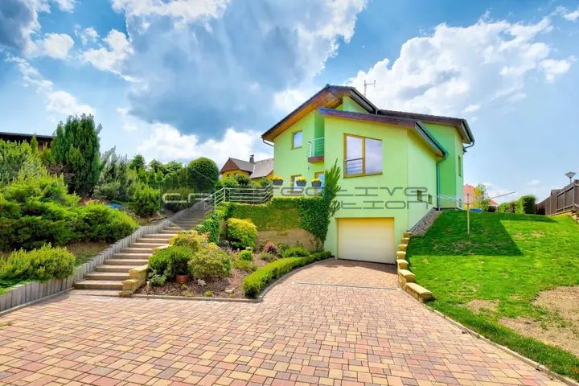
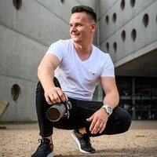

01 / 03
Fotografie nemovitostí a interiérů
Fotím nemovitosti a interiéry pro prodej i pro prezentaci na Booking.com nebo Airbnb. Každá fotografie projde ruční postprodukcí.
Zeptat se na termín→








Svatební videa a nemovitosti v nejlepším světle
Zeptat se na termín →(01) Ahoj
Jmenuji se Zdeněk Novotný, bydlím v Hořicích a točím svatební videa po celé České republice. Přes týden fotím interiéry a natáčím videoprohlídky pro realitní makléře a developery . Video je pro mě nositelem emoce, ať jde o váš svatební den, nebo o dům, který hledá nového majitele.
(02) Co dělám
01 / 03
Fotím nemovitosti a interiéry pro prodej i pro prezentaci na Booking.com nebo Airbnb. Každá fotografie projde ruční postprodukcí.
Zeptat se na termín→Dále nabízím
Zachytím váš svatební den a proměním ho ve vzpomínku na celý život. Natočím video, které vypráví váš vlastní příběh lásky.
↗Dynamická videoprohlídka zvýrazní prostor, detaily i atmosféru. Se skenerem Matterport vytvořím virtuální prohlídku, kterou si zájemce projde z pohodlí domova.
↗(04) Postup
Od první zprávy po hotovou galerii.
Krok 1 z 4
Napište mi nebo zavolejte, používám i WhatsApp a iMessage. Snažím se odpovědět nejdéle do 48 hodin.
Krok 2 z 4
Probereme termín, místo a to, co od videa nebo fotek čekáte. U nemovitostí doporučím, jestli se hodí fotky, videoprohlídka nebo 3D scan.
Krok 3 z 4
Přijedu s kompletní technikou, včetně zvuku, světel a dronu. Na svatbě jsem s vámi, abych zachytil celý příběh dne.
Krok 4 z 4
Video stříhám tak, aby vyprávělo právě váš příběh. Každá fotografie nemovitosti projde ruční postprodukcí.
Video je nositelem emoce.
(05) Za objektivem
Vyrůstal jsem na vesnici a filmy jsem měl rád odjakživa. Když si kamarádi kupovali motorky, rodiče mi pořídili první kameru Sony a první střihy jsem dělal v programu Pinnacle Studio. Skutečná příležitost přišla v roce 2016, kdy se ženil jeden z mých nejlepších kamarádů a já mu svatbu natočil na zrcadlovku.
Tehdy jsem ještě pracoval v IT, ale zájem o moje videa rostl, a tak se z koníčku v roce 2019 stala práce na plný úvazek. Inspiroval jsem se zahraničními tvůrci, dokupoval techniku a s každou svatbou se snažil posunout dál. Dnes natáčím s profesionálním audio rekordérem, mikrofony, světly, stabilizátory a dronem s licencí SPECIFIC, protože obraz je jen polovina celku.
Svatební videa jsou to, co mě opravdu baví. Vyprávím příběhy lidí, které spojila láska, a díky tomu poznávám krásná místa i nové přátele. Přes týden jsem v terénu s makléři a developery, pro které připravuji fotografie interiérů i exteriérů, videoprohlídky, 3D půdorysy a virtuální prohlídky Matterport.

Zdeněk
Zdeněk Novotný · Svatební kameraman a fotograf nemovitostí
Sídlím v Hořicích ve východních Čechách, ale působím po celé České republice.
Svatební video natáčím od 9 999 Kč. Přesnou nabídku vám připravím podle rozsahu dne a vašich přání.
Ano, jsem pilot dronu s licencí SPECIFIC, takže záběry z výšky zvládnu i u náročnějších projektů.
Kompletní servis pro prezentaci nemovitosti: fotografie interiérů a exteriérů, videoprohlídku, 3D půdorys, virtuální prohlídku Matterport i virtual staging. S makléři dlouhodobě spolupracuji.
(07) Kontakt
Napište pár vět o tom, co si představujete, a termín, který se vám hodí.